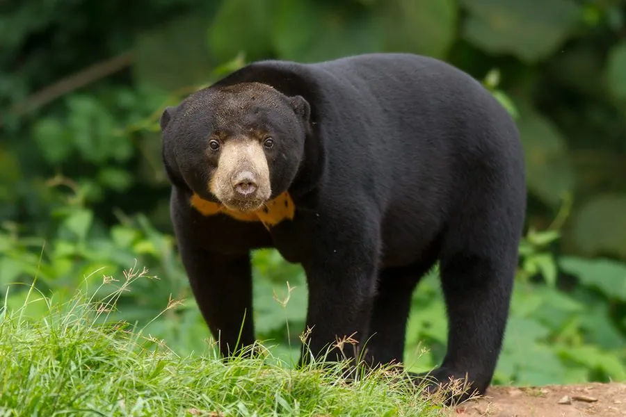

哺乳动物 · 动物界
马来熊 Helarctos malayanus

世界上体型最小的熊类，全身乌黑、胸前有金色太阳形斑块，舌头很长，擅长爬树和掏食蜂蜜与白蚁。
- 分类
- 门脊索动物门纲哺乳纲目食肉目科熊科属马来熊属
- 栖息环境
- 热带雨林、山地森林与红树林，树栖为主
- 地理分布
- 东南亚，从缅甸、泰国到马来半岛、苏门答腊和婆罗洲
- 保护级别
- IUCN 易危（VU）；中国国家一级保护动物
物种志
马来熊体长 1.0–1.5 米，肩高 0.6–0.8 米，体重 27–65 kg，是现存最小的熊类。它的被毛短而乌黑，胸前有一块橙黄色至浅黄色的太阳形或马蹄形斑纹；头部圆、耳朵小，吻部短，四肢粗壮，爪弯曲如钩，适合攀爬。
马来熊分布于东南亚的热带雨林，从缅甸、泰国、越南到马来半岛、苏门答腊和婆罗洲，栖息于低地雨林、山地森林和红树林。它是树栖性最强的熊类，白天多在树上休息，夜间活动，取食果实、蜂蜜、白蚁、蚂蚁、蚯蚓和小型脊椎动物；舌头可伸长到 20–25 cm，用来舔食蜂蜜和蚁巢中的昆虫。马来熊全年可繁殖，妊娠期约 95–100 天，每胎 1–2 仔。森林砍伐和宠物贸易使种群持续下降，中国将其列为国家一级保护动物。
形态与习性
- 食性果实、蜂蜜、白蚁、蚂蚁、蚯蚓与小型脊椎动物
- 体长1.0–1.5 m，肩高 0.6–0.8 m
- 体重27–65 kg，现存最小的熊
- 寿命野外约 20–25 年
- 繁殖妊娠期约 95–100 天，每胎 1–2 仔
- 舌头可伸长至 20–25 cm，用于舔食蜂蜜
- 胸斑橙黄色太阳形或马蹄形斑纹
趣味知识
- 马来熊是现存最小的熊，成年个体体重多在 27–65 kg。
- 它的舌头可伸长到 20–25 cm，方便舔食蜂蜜和蚁巢。
- 胸前的金色太阳形斑纹是马来熊最醒目的特征。
- 马来熊是树栖性最强的熊类，常在树上休息和觅食。